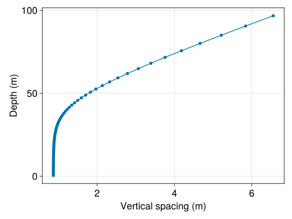
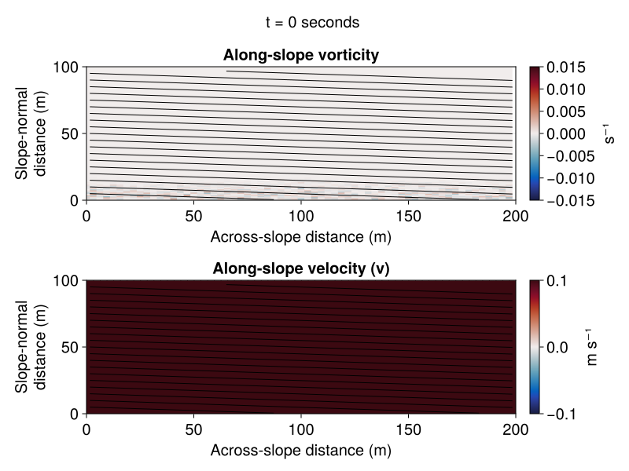

This example simulates a two-dimensional oceanic bottom boundary layer in a domain that's tilted with respect to gravity. We simulate the perturbation away from a constant along-slope (y-direction) velocity constant density stratification. This perturbation develops into a turbulent bottom boundary layer due to momentum loss at the bottom boundary modeled with a quadratic drag law.
This example illustrates
- changing the direction of gravitational acceleration in the buoyancy model;
- changing the axis of rotation for Coriolis forces.
Install dependencies
First let's make sure we have all required packages installed.
using Pkg
pkg"add Oceananigans, NCDatasets, CairoMakie"The domain
We create a grid with finer resolution near the bottom,
using Oceananigans
using Oceananigans.Units
Lx = 200meters
Lz = 100meters
Nx = 64
Nz = 64
# Creates a grid with near-constant spacing `refinement * Lz / Nz`
# near the bottom:
refinement = 1.8 # controls spacing near surface (higher means finer spaced)
stretching = 10 # controls rate of stretching at bottom
# "Warped" height coordinate
h(k) = (Nz + 1 - k) / Nz
# Linear near-surface generator
ζ(k) = 1 + (h(k) - 1) / refinement
# Bottom-intensified stretching function
Σ(k) = (1 - exp(-stretching * h(k))) / (1 - exp(-stretching))
# Generating function
z_faces(k) = - Lz * (ζ(k) * Σ(k) - 1)
grid = RectilinearGrid(topology = (Periodic, Flat, Bounded),
size = (Nx, Nz),
x = (0, Lx),
z = z_faces)64×1×64 RectilinearGrid{Float64, Periodic, Flat, Bounded} on CPU with 3×0×3 halo
├── Periodic x ∈ [0.0, 200.0) regularly spaced with Δx=3.125
├── Flat y
└── Bounded z ∈ [-0.0, 100.0] variably spaced with min(Δz)=0.868817, max(Δz)=6.55496Let's make sure the grid spacing is both finer and near-uniform at the bottom,
using CairoMakie
scatterlines(zspacings(grid, Center()),
axis = (ylabel = "Depth (m)",
xlabel = "Vertical spacing (m)"))

Tilting the domain
We use a domain that's tilted with respect to gravity by
θ = 3 # degrees3so that $x$ is the along-slope direction, $z$ is the across-slope direction that is perpendicular to the bottom, and the unit vector anti-aligned with gravity is
ẑ = (sind(θ), 0, cosd(θ))(0.052335956242943835, 0, 0.9986295347545738)Changing the vertical direction impacts both the gravity_unit_vector for BuoyancyForce as well as the rotation_axis for Coriolis forces,
buoyancy = BuoyancyForce(BuoyancyTracer(), gravity_unit_vector = .-ẑ)
coriolis = ConstantCartesianCoriolis(f = 1e-4, rotation_axis = ẑ)ConstantCartesianCoriolis{Float64}: fx = 5.23e-06, fy = 0.00e+00, fz = 9.99e-05where above we used a constant Coriolis parameter $f = 10^{-4} \, \rm{s}^{-1}$. The tilting also affects the kind of density stratified flows we can model. In particular, a constant density stratification in the tilted coordinate system
@inline constant_stratification(x, z, t, p) = p.N² * (x * p.ẑ[1] + z * p.ẑ[3])constant_stratification (generic function with 1 method)is not periodic in $x$. Thus we cannot explicitly model a constant stratification on an $x$-periodic grid such as the one used here. Instead, we simulate periodic perturbations away from the constant density stratification by imposing a constant stratification as a BackgroundField,
N² = 1e-5 # s⁻² # background vertical buoyancy gradient
B∞_field = BackgroundField(constant_stratification, parameters=(; ẑ, N² = N²))BackgroundField{typeof(Main.var"##246".constant_stratification), @NamedTuple{ẑ::Tuple{Float64, Int64, Float64}, N²::Float64}}
├── func: constant_stratification (generic function with 1 method)
└── parameters: (ẑ = (0.052335956242943835, 0, 0.9986295347545738), N² = 1.0e-5)We choose to impose a bottom boundary condition of zero total diffusive buoyancy flux across the seafloor,
\[∂_z B = ∂_z b + N^{2} \cos{\theta} = 0.\]
This shows that to impose a no-flux boundary condition on the total buoyancy field $B$, we must apply a boundary condition to the perturbation buoyancy $b$,
\[∂_z b = - N^{2} \cos{\theta}.\]
∂z_b_bottom = - N² * cosd(θ)
negative_background_diffusive_flux = GradientBoundaryCondition(∂z_b_bottom)
b_bcs = FieldBoundaryConditions(bottom = negative_background_diffusive_flux)Oceananigans.FieldBoundaryConditions, with boundary conditions
├── west: DefaultBoundaryCondition (FluxBoundaryCondition: Nothing)
├── east: DefaultBoundaryCondition (FluxBoundaryCondition: Nothing)
├── south: DefaultBoundaryCondition (FluxBoundaryCondition: Nothing)
├── north: DefaultBoundaryCondition (FluxBoundaryCondition: Nothing)
├── bottom: GradientBoundaryCondition: -9.9863e-6
├── top: DefaultBoundaryCondition (FluxBoundaryCondition: Nothing)
└── immersed: DefaultBoundaryCondition (FluxBoundaryCondition: Nothing)Bottom drag and along-slope interior velocity
We impose bottom drag that follows Monin–Obukhov theory:
V∞ = 0.1 # m s⁻¹
z₀ = 0.1 # m (roughness length)
κ = 0.4 # von Karman constant
z₁ = first(znodes(grid, Center())) # Closest grid center to the bottom
cᴰ = (κ / log(z₁ / z₀))^2 # Drag coefficient
@inline drag_u(x, t, u, v, p) = - p.cᴰ * √(u^2 + (v + p.V∞)^2) * u
@inline drag_v(x, t, u, v, p) = - p.cᴰ * √(u^2 + (v + p.V∞)^2) * (v + p.V∞)
drag_bc_u = FluxBoundaryCondition(drag_u, field_dependencies=(:u, :v), parameters=(; cᴰ, V∞))
drag_bc_v = FluxBoundaryCondition(drag_v, field_dependencies=(:u, :v), parameters=(; cᴰ, V∞))
u_bcs = FieldBoundaryConditions(bottom = drag_bc_u)
v_bcs = FieldBoundaryConditions(bottom = drag_bc_v)Oceananigans.FieldBoundaryConditions, with boundary conditions
├── west: DefaultBoundaryCondition (FluxBoundaryCondition: Nothing)
├── east: DefaultBoundaryCondition (FluxBoundaryCondition: Nothing)
├── south: DefaultBoundaryCondition (FluxBoundaryCondition: Nothing)
├── north: DefaultBoundaryCondition (FluxBoundaryCondition: Nothing)
├── bottom: FluxBoundaryCondition: ContinuousBoundaryFunction drag_v at (Nothing, Nothing, Nothing)
├── top: DefaultBoundaryCondition (FluxBoundaryCondition: Nothing)
└── immersed: DefaultBoundaryCondition (FluxBoundaryCondition: Nothing)Note that, similar to the buoyancy boundary conditions, we had to include the background flow in the drag calculation.
Let us also create BackgroundField for the along-slope interior velocity:
V∞_field = BackgroundField(V∞)BackgroundField{Float64, Nothing}
├── func: 0.1
└── parameters: nothingCreate the NonhydrostaticModel
We are now ready to create the model. We create a NonhydrostaticModel with a fifth-order UpwindBiased advection scheme and a constant viscosity and diffusivity. Here we use a smallish value of $10^{-4} \, \rm{m}^2\, \rm{s}^{-1}$.
ν = 1e-4
κ = 1e-4
closure = ScalarDiffusivity(; ν, κ)
model = NonhydrostaticModel(; grid, buoyancy, coriolis, closure,
advection = UpwindBiased(order=5),
tracers = :b,
boundary_conditions = (u=u_bcs, v=v_bcs, b=b_bcs),
background_fields = (; b=B∞_field, v=V∞_field))NonhydrostaticModel{CPU, RectilinearGrid}(time = 0 seconds, iteration = 0)
├── grid: 64×1×64 RectilinearGrid{Float64, Periodic, Flat, Bounded} on CPU with 3×0×3 halo
├── timestepper: RungeKutta3TimeStepper
├── advection scheme: UpwindBiased(order=5)
├── tracers: b
├── closure: ScalarDiffusivity{ExplicitTimeDiscretization}(ν=0.0001, κ=(b=0.0001,))
├── buoyancy: BuoyancyTracer with ĝ = (-0.052336, 0.0, -0.99863)
└── coriolis: ConstantCartesianCoriolis{Float64}Let's introduce a bit of random noise at the bottom of the domain to speed up the onset of turbulence:
noise(x, z) = 1e-3 * randn() * exp(-(10z)^2 / grid.Lz^2)
set!(model, u=noise, w=noise)Create and run a simulation
We are now ready to create the simulation. We begin by setting the initial time step conservatively, based on the smallest grid size of our domain and either an advective or diffusive time scaling, depending on which is shorter.
Δt₀ = 0.5 * minimum([minimum_zspacing(grid) / V∞, minimum_zspacing(grid)^2/κ])
simulation = Simulation(model, Δt = Δt₀, stop_time = 1day)Simulation of NonhydrostaticModel{CPU, RectilinearGrid}(time = 0 seconds, iteration = 0)
├── Next time step: 4.344 seconds
├── Elapsed wall time: 0 seconds
├── Wall time per iteration: NaN days
├── Stop time: 1 day
├── Stop iteration: Inf
├── Wall time limit: Inf
├── Minimum relative step: 0.0
├── Callbacks: OrderedDict with 4 entries:
│ ├── stop_time_exceeded => 4
│ ├── stop_iteration_exceeded => -
│ ├── wall_time_limit_exceeded => e
│ └── nan_checker => }
├── Output writers: OrderedDict with no entries
└── Diagnostics: OrderedDict with no entriesWe use a TimeStepWizard to adapt our time-step,
wizard = TimeStepWizard(max_change=1.1, cfl=0.7)
simulation.callbacks[:wizard] = Callback(wizard, IterationInterval(4))Callback of TimeStepWizard(cfl=0.7, max_Δt=Inf, min_Δt=0.0) on IterationInterval(4)and also we add another callback to print a progress message,
using Printf
start_time = time_ns() # so we can print the total elapsed wall time
progress_message(sim) =
@printf("Iteration: %04d, time: %s, Δt: %s, max|w|: %.1e m s⁻¹, wall time: %s\n",
iteration(sim), prettytime(time(sim)),
prettytime(sim.Δt), maximum(abs, sim.model.velocities.w),
prettytime((time_ns() - start_time) * 1e-9))
simulation.callbacks[:progress] = Callback(progress_message, IterationInterval(200))Callback of progress_message on IterationInterval(200)Add outputs to the simulation
We add outputs to our model using the NetCDFWriter, which needs NCDatasets to be loaded:
u, v, w = model.velocities
b = model.tracers.b
B∞ = model.background_fields.tracers.b
B = b + B∞
V = v + V∞
ωy = ∂z(u) - ∂x(w)
outputs = (; u, V, w, B, ωy)
using NCDatasets
simulation.output_writers[:fields] = NetCDFWriter(model, outputs;
filename = joinpath(@__DIR__, "tilted_bottom_boundary_layer.nc"),
schedule = TimeInterval(20minutes),
overwrite_existing = true)NetCDFWriter scheduled on TimeInterval(20 minutes):
├── filepath: tilted_bottom_boundary_layer.nc
├── dimensions: time(0), x_faa(64), x_caa(64), z_aaf(65), z_aac(64)
├── 5 outputs: (B, w, ωy, V, u)
├── array_type: Array{Float32}
├── file_splitting: NoFileSplitting
└── file size: 22.0 KiBNow we just run it!
run!(simulation)[ Info: Initializing simulation...
Iteration: 0000, time: 0 seconds, Δt: 4.778 seconds, max|w|: 9.7e-04 m s⁻¹, wall time: 25.993 seconds
[ Info: ... simulation initialization complete (10.947 seconds)
[ Info: Executing initial time step...
[ Info: ... initial time step complete (9.724 seconds).
Iteration: 0200, time: 3.563 hours, Δt: 1.383 minutes, max|w|: 5.4e-03 m s⁻¹, wall time: 42.383 seconds
Iteration: 0400, time: 8.684 hours, Δt: 58.982 seconds, max|w|: 9.9e-03 m s⁻¹, wall time: 44.623 seconds
Iteration: 0600, time: 12.762 hours, Δt: 1.531 minutes, max|w|: 3.9e-03 m s⁻¹, wall time: 46.082 seconds
Iteration: 0800, time: 16.528 hours, Δt: 1.117 minutes, max|w|: 7.5e-03 m s⁻¹, wall time: 47.601 seconds
Iteration: 1000, time: 19.974 hours, Δt: 1.070 minutes, max|w|: 7.7e-03 m s⁻¹, wall time: 49.173 seconds
Iteration: 1200, time: 23.391 hours, Δt: 50.694 seconds, max|w|: 8.4e-03 m s⁻¹, wall time: 50.817 seconds
[ Info: Simulation is stopping after running for 32.495 seconds.
[ Info: Simulation time 1 day equals or exceeds stop time 1 day.
Visualize the results
First we load the required package to load NetCDF output files and define the coordinates for plotting using existing objects:
using NCDatasets, CairoMakie
xb, yb, zb = nodes(B)
xω, yω, zω = nodes(ωy)
xv, yv, zv = nodes(V)(1.5625:3.125:198.4375, nothing, [0.4344083608847693, 1.303282217470314, 2.1722793473188617, 3.041419168936904, 3.9107241431416084, 4.780220246692868, 5.649937519111903, 6.519910693894487, 7.390179927024476, 8.26079163764491, 9.131799477986252, 10.00326545222724, 10.875261206921866, 11.747869519021842, 12.621186011421164, 13.495321130420056, 14.370402424632783, 15.24657717074116, 16.124015398230675, 17.00291337296054, 17.88349760825156, 18.766029482284154, 19.650810552161538, 20.538188668213625, 21.428565007224726, 22.322402160523495, 23.22023343257072, 24.122673528152244, 25.030430831905008, 25.944321513097137, 26.865285721823064, 27.794406180595843, 28.732929518320184, 29.682290742481506, 30.64414130083751, 31.62038124678409, 32.61319609381579, 33.62509902514256, 34.65897921569778, 35.71815712673464, 36.80644774933731, 37.92823290397964, 39.08854385039015, 40.29315562720595, 41.548694726134066, 42.86276191262984, 44.24407223660885, 45.702614534695954, 47.24983301231516, 48.89883381190526, 50.66461982505285, 52.56435739360966, 54.61767896995204, 56.84702627115933, 59.27803896724765, 61.93999449018695, 64.86630513774502, 68.09507927238374, 71.66975407682737, 75.63980801853194, 80.06156188607441, 84.99907797852119, 90.52516773625328, 96.72251877439135])Read in the simulation's output_writer for the two-dimensional fields and then create an animation showing the $y$-component of vorticity.
ds = NCDataset(simulation.output_writers[:fields].filepath, "r")
fig = Figure(size = (800, 600))
axis_kwargs = (xlabel = "Across-slope distance (m)",
ylabel = "Slope-normal\ndistance (m)",
limits = ((0, Lx), (0, Lz)),
)
ax_ω = Axis(fig[2, 1]; title = "Along-slope vorticity", axis_kwargs...)
ax_v = Axis(fig[3, 1]; title = "Along-slope velocity (v)", axis_kwargs...)
n = Observable(1)
ωy = @lift ds["ωy"][:, :, $n]
B = @lift ds["B"][:, :, $n]
hm_ω = heatmap!(ax_ω, xω, zω, ωy, colorrange = (-0.015, +0.015), colormap = :balance)
Colorbar(fig[2, 2], hm_ω; label = "s⁻¹")
ct_b = contour!(ax_ω, xb, zb, B, levels=-1e-3:0.5e-4:1e-3, color=:black)
V = @lift ds["V"][:, :, $n]
V_max = @lift maximum(abs, ds["V"][:, :, $n])
hm_v = heatmap!(ax_v, xv, zv, V, colorrange = (-V∞, +V∞), colormap = :balance)
Colorbar(fig[3, 2], hm_v; label = "m s⁻¹")
ct_b = contour!(ax_v, xb, zb, B, levels=-1e-3:0.5e-4:1e-3, color=:black)
times = collect(ds["time"])
title = @lift "t = " * string(prettytime(times[$n]))
fig[1, :] = Label(fig, title, fontsize=20, tellwidth=false)
fig
Finally, we record a movie.
frames = 1:length(times)
record(fig, "tilted_bottom_boundary_layer.mp4", frames, framerate=12) do i
n[] = i
endDon't forget to close the NetCDF file!
close(ds)closed DatasetThis page was generated using Literate.jl.